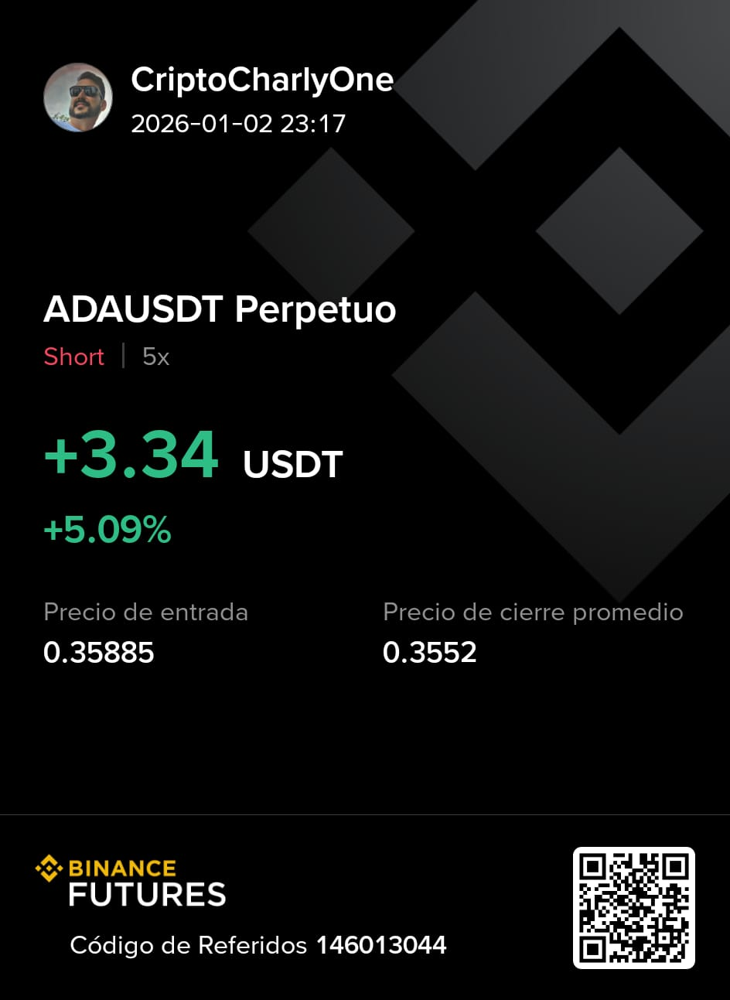
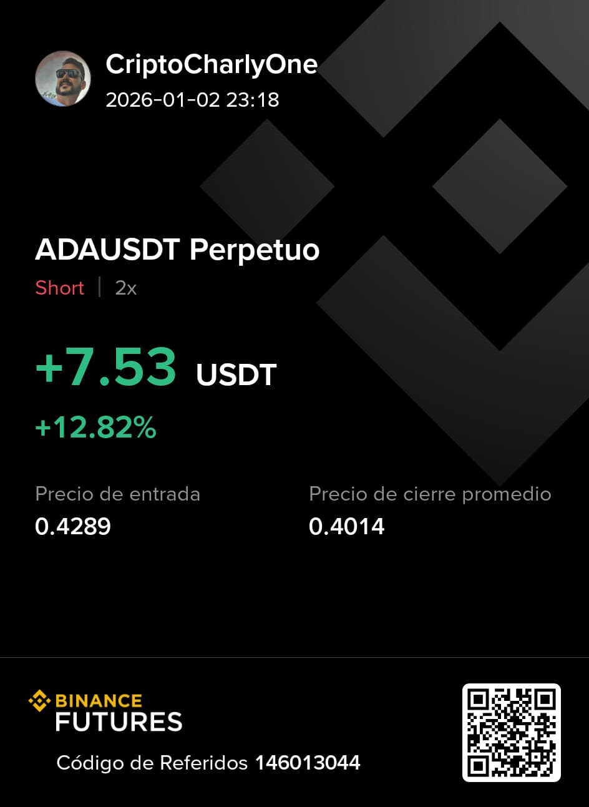
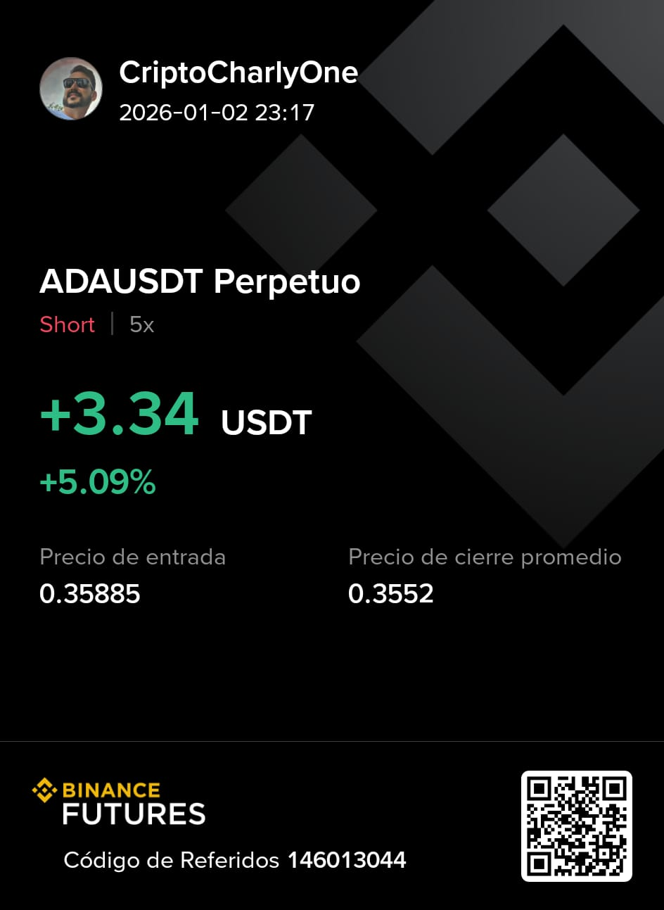
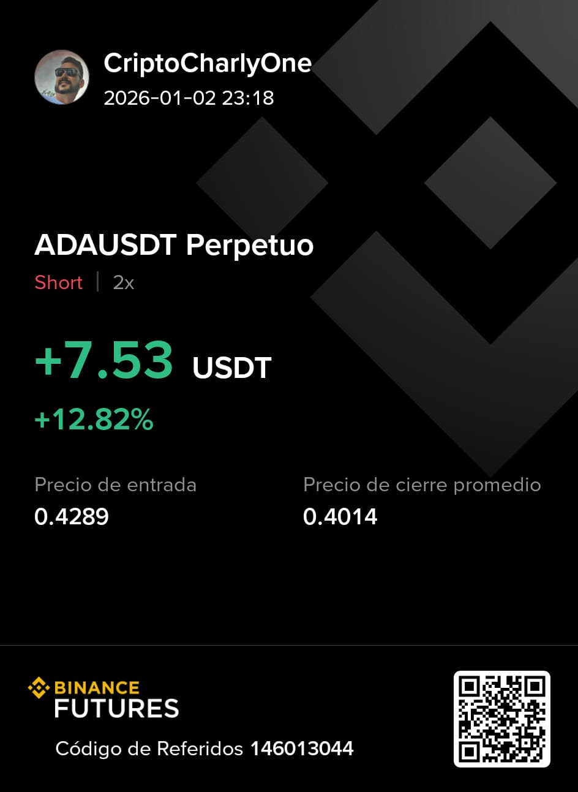

📉 13 de enero del 2026
La verdadera libertad financiera
Hoy también sentí la necesidad de dejarle un mensaje a mi comunidad sobre algo que muchas veces se malinterpreta: la libertad financiera. Para mí, la libertad financiera no empieza el día que uno se vuelve millonario, aunque ese sea el objetivo y hacia donde apunto. La verdadera libertad financiera comienza mucho antes.
La libertad financiera es poder disponer de tu tiempo. Es poder levantarte y decidir qué hacer con tu día. Es tener tiempo para estar con tu familia, viajar, hacer ejercicio a la hora que quieras, cuidar tu salud y tu mente, sin estar atado a horarios rígidos ni a un trabajo que te consume la vida.
Cuando tus inversiones y tus ingresos pasivos cubren tus gastos básicos, ahí ya sos libre financieramente. Tal vez no seas millonario todavía, pero ya recuperaste lo más valioso que existe: el tiempo. Y desde ese lugar, todo se construye con más calma, con más claridad y con una mentalidad distinta.
El dinero es importante, sí, pero no como fin, sino como herramienta. Una herramienta para vivir con propósito, con tranquilidad y con presencia real en la vida de los que amamos. Ese es el camino que estoy recorriendo, y es el mismo camino que le deseo a todos los que forman parte de esta comunidad.
📉 Dic 2025 – Mi recorrido con la estrategia ANTI ADA (Short en ADA)
Hoy quiero dejar una nueva actualización sobre mi avance personal aplicando la estrategia
ANTI ADA, es decir, operativa SHORT en Cardano (ADA).
Adopté esta estrategia cuando el mercado comenzó a mostrar
señales claras de debilidad y estructura bajista.
Aclaro algo importante: esto no es una recomendación de inversión,
es simplemente mi recorrido personal, que dejo acá por si puede inspirar a alguien.
Comencé con esta estrategia en el mes de noviembre y al día de hoy
cierro el año con 15 operaciones cerradas en profit,
todas bajo mi propio análisis y responsabilidad.
Durante el proceso operé sin stop loss, lo que implica una carga emocional fuerte.
Varias operaciones estuvieron en pérdidas no realizadas.
Ver una posición en negativo con más del 20% en contra
realmente pone a prueba la mente.
Pero cuando el análisis es correcto, la meta está clara y el plan está bien definido,
lo único que queda es esperar con disciplina.
Me siento muy orgulloso del crecimiento que estoy teniendo en el trading,
no solo por los resultados, sino por el control emocional.
Porque así como una operación en negativo genera ansiedad,
una operación en positivo también acelera el impulso de cerrar antes de tiempo.
En mi caso, cuando el profit llega al 10%, tomo ganancias sin dudar.
No espero más. La avaricia es un error común en el trading y,
si uno se deja llevar por ella, termina perdiéndolo todo.
Siempre pongo a Dios al frente de todo lo que hago,
porque estoy convencido de que mi claridad, disciplina y crecimiento
vienen de Él.
Gracias Señor por tu guía divina.
Para ejecutar esta estrategia utilizo el exchange Binance.
Para mí es una plataforma espectacular y el exchange más grande del mundo.
👉
Crear cuenta en Binance
Consejo sincero: invertí en trading solo un monto que estés dispuesto a perder.
No porque lo vayas a perder, sino porque el riesgo existe,
así como también grandes oportunidades.
En lo personal opero con 200 USD,
utilizo apalancamiento 5x
y voy abriendo varias operaciones durante el mes,
siempre con riesgo bien medido.
A continuación dejo las capturas reales de las operaciones.
Con una meta clara, un plan definido y la presencia de Dios en nuestras vidas,
todo es posible.
Amén.
📊 Operaciones (1 a 15)
 



🚀 12 Dic 2025 – Evolucionando con mi Estrategia Short en ADA
Sigo enfocado, aprendiendo y creciendo cada día más en este increíble camino del trading y las criptomonedas.
Hoy comparto con ustedes mi progreso aplicando una estrategia que vengo trabajando hace semanas:
🎯 Short en Cardano (ADA)
🔥 Basada en leer el precio por encima de la narrativa
Ya cerré 7 operaciones exitosas siguiendo esta misma línea.
Actualmente estoy con mi operación #8 en juego.
Cuando se cierre, también la voy a sumar 💪
Esta idea nació inspirada en el trabajo de un creador al que sigo hace mucho
y considero un ejemplo a seguir: CriptoNorbel.
Él ejecuta una estrategia similar en Ethereum, y ver su dedicación y disciplina
me motiva muchísimo a seguir formándome 📚✨
Estoy convencido de que cada paso, cada decisión y cada aprendizaje me acerca
al trader que quiero ser. Nada llega por casualidad:
Disciplina + Estrategia + Gestión del riesgo = Evolución constante 📈
Gracias a todos los que se toman el tiempo de leerme y acompañarme en esta etapa.
Prometo seguir actualizando mis resultados cada fin de mes para que este diario
quede como testigo de mi crecimiento 🚀🙌
⚠️ 24 Nov 2025 – Operación Contraria: Estrategia “Anti Charles Hoskinson”
El mercado está enviando señales claras… y no pienso ignorarlas.
Mientras muchos siguen soñando con subidas eternas, yo me posicioné con una estrategia
completamente contraria y calculada:
🔥 Operando SHORT en Cardano ante la posibilidad de un bear market inminente.
📉 Estrategia bautizada como “Anti Charles Hoskinson”.
Y lo mejor: ya acumulo varias operaciones ganadas.
Cuando la multitud va a la izquierda, las mejores oportunidades están a la derecha.
Si el mercado confirma la fuerte corrección que estoy esperando, esta jugada podría convertirse
en una de las más rentables que haya ejecutado.
Esto no es suerte.
Es análisis.
Es visión.
Es disciplina.
El mercado premia a quien entiende algo simple:
No se trata de adorar proyectos… se trata de leer el precio. 💹🔥
📉 Mis primeros short


📈 01 Marzo 2025 – Disciplina por Encima del Impulso
Hoy reafirmé algo importante: el mercado recompensa la disciplina, no la emoción. A veces la mejor operación es no operar. Mi enfoque sigue firme: entradas claras, stops bien colocados, y una visión limpia. Dios sigue guiando cada paso. 🙏
📈 24 Feb 2025 – Ajustando Estrategia
Estoy puliendo mi estrategia de futuros con apalancamiento bajo (2x–5x). La clave no es la velocidad, sino la precisión. Antes buscaba “más”, ahora busco “mejor”. Hoy fue un día de práctica y análisis profundo, no de riesgo innecesario.
📈 20 Feb 2025 – Reflexión Personal
Cada día me convenzo más de que este camino financiero también es espiritual. Cuando mantengo mi mente en paz, sin ansiedad, mis decisiones son más sabias. La paciencia siempre paga, y Dios ilumina cuando uno está alineado con la fe. ✨
📈 14 Feb 2025 – Resultados del DCA
Mi estrategia DCA con Bitcoin marcha perfecta. Comprando pase lo que pase, sin emociones. Ver cómo crece con el tiempo me recuerda que las grandes cosechas vienen de semillas pequeñas pero constantes. Bitcoin es paciencia, visión y convicción. ₿🔥
📈 10 Feb 2025 – Gestión de Riesgo
Hoy revisé mis métricas y confirmé algo esencial: usar stop loss no es opcional, es obligatorio. Me siento agradecido de haber dejado atrás la etapa sin SL. La gestión de riesgo es lo que mantiene viva la cuenta y al trader.